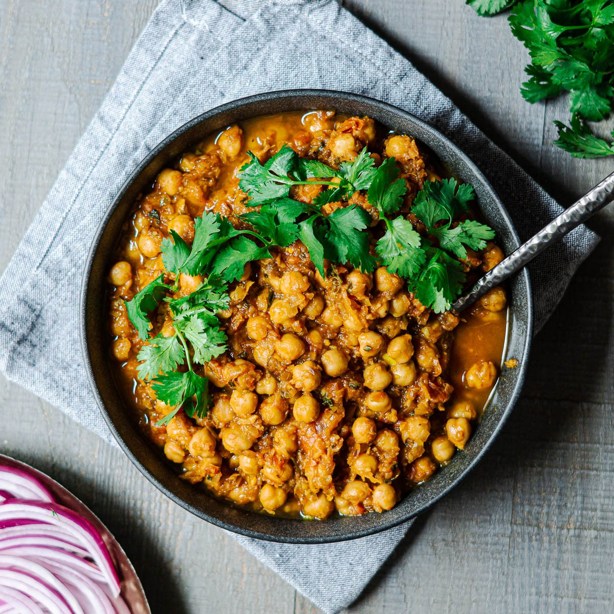

Chickpea Curry
Description
This traditional indian recipe for a chana masala, or chickpea curry is one of my favorite dishes to serve on a cold rainy autumn day. It really warms you up from the inside, is super delicios and healthy. It takes some time though, so prepare accordingly, but it's totally worth it.
Ingredients
- 4 large Onions
- 4 Tomatos
- 4 Potatos
- 800g Chickpeas
- 4 green Chilis
- 4 Garlic cloves
- 50g Butter
- 1 Lemon
- Methi Leaves
- 1 Can Coconut Cream
- 50g Coconut Oil
Spices
- Salt
- Cumin
- Cilantro Seeds
- Curcuma
- Chili Powder
- Garam Masala
- Cinnamon
Steps
-
Heat the Oil: In a deep pot over medium-high heat, add the coconut oil. Add in the Onions and Tomatoes: Grind some sea salt and ground black pepper over the mixture and stir together. Lower heat to medium and allow to cook down until juices of the tomatoes are naturally released and onions are soft, about 10 minutes. I've found that this step really helps to develop the flavors of the dish and break them all down for the seasonings later.
-
Add in the Chickpeas: Also mix in the garlic, garam masala, curry powder and cumin. Stir to combine.
-
Add in the Coconut Milk and Stir Again: Add in the coconut flour (or any flour, optional) which helps to slightly thicken the curry. Bring the curry to a boil, and then reduce to medium-low so that the mixture continues to simmer for 10 to 12 more minutes.
-
Serve and Enjoy: Taste the curry and season with salt and pepper if you desire. Remove the curry from the heat and squeeze a lime lightly over the top of the curry, stirring to combine. Don't skip this step!! Allow to cool slightly and then serve. Enjoy!